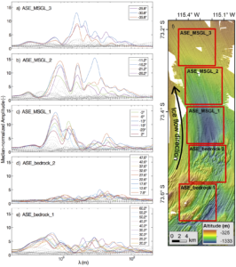

Several new papers published this summer exemplify the diversity of our research group's interests and methodologies. Thanks to the outstanding scientists and co-authors who led these efforts: Denis Felikson, Rebecca Jackson, and Matteo Spagnolo.
The first of these, published in Nature Geoscience, uses analytical analysis of glacier flow to explain the extent of inland thinning in Greenland. This work received a variety of media coverage in the scientific and popular press, including on Boise State Public Radio and a regional newspaper, the Inlander.
The second, in Geophysical Research Letters, draws on observations of buoyant freshwater plumes in glacierized fjords and assesses their relationship to the subglacial discharge that drives them.
The third, in the Journal of Geophysical Research, uses two dimensional spectral analysis to reveal the ice stream produced bedforms consist of multiple, distinct, wavelength peaks. These peaks coarsen down flow and are consistent with self-organizing processes. This paper was selected as an Editor's Highlight:
This paper reports the first application of the 2-dimensional discrete Fourier transform method to describing and analyzing the orientation-specific roughness elements of mega-scale glacial lineations (MSGL). Applying the technique to several case study examples reveals characteristic, orientation-specific roughness scales that guide process-related inferences on MSGL formation and evolution.

